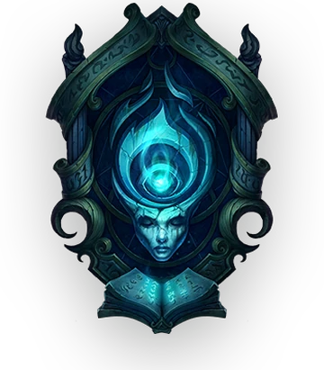
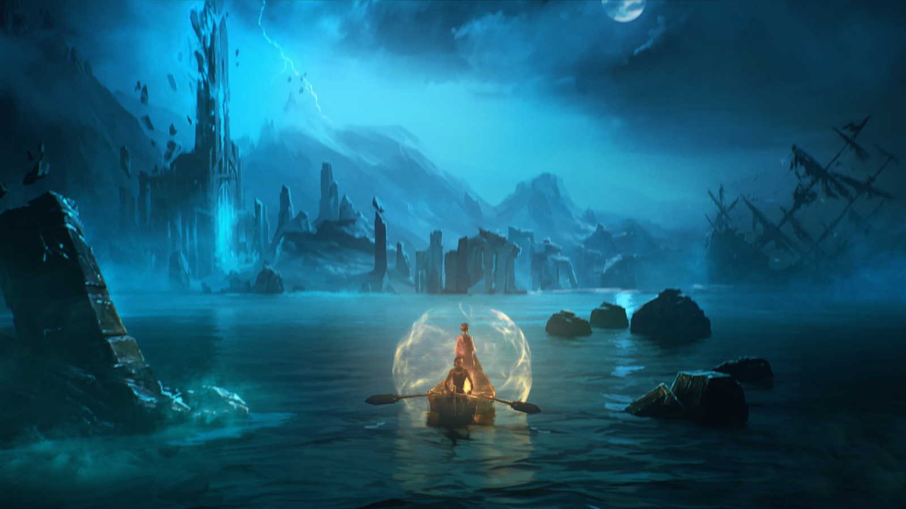

A Shadow Isles egy régió a League of Legends világában, amelyet sötét és misztikus erők uralnak. A szigeteket egykor a Blessed Isles néven ismerték, de egy átok következtében elátkozottá váltak, és a halál és a sötétség birodalmává váltak.
Itt volt található a Water of Life mely elvileg a halottakat visszahozza. De egy király kudarca miatt az egész sziget elátkozottá vált.
